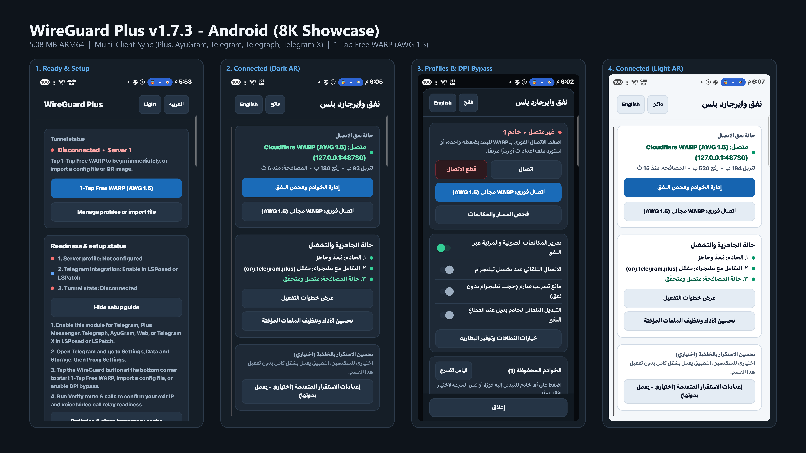

WireGuard Plus — WireGuard & AmneziaWG Inside Telegram
WireGuard & AmneziaWG inside Telegram only — built to bypass Telegram blocks and DPI throttling without root, without occupying Android's VPN slot, and with encrypted voice & video calls.
Why WireGuard Plus?
Telegram-Only Tunnel
Embeds wireguard-go + gVisor netstack directly inside the Telegram process. Local and banking apps remain untouched.
Keeps Android VPN Slot Free
Does not occupy Android's system-wide VpnService slot, so AdGuard or your work VPN can keep running alongside Telegram.
Rootless & Rooted Support
Works rootless via LSPatch on Android 5.0+ as well as rooted devices via LSPosed.
Encrypted Voice & Video Calls
Routes UDP calls cleanly inside the tunnel with no P2P IP leak and no sponsored proxy channels.
AmneziaWG DPI Obfuscation
Supports AmneziaWG obfuscation parameters and DNS-over-HTTPS (DoH) endpoint lookup for restricted networks.
In-Process Kill Switch & Failover
Includes a strict in-process kill switch and multi-server failover to keep Telegram connected reliably.
Screenshots
